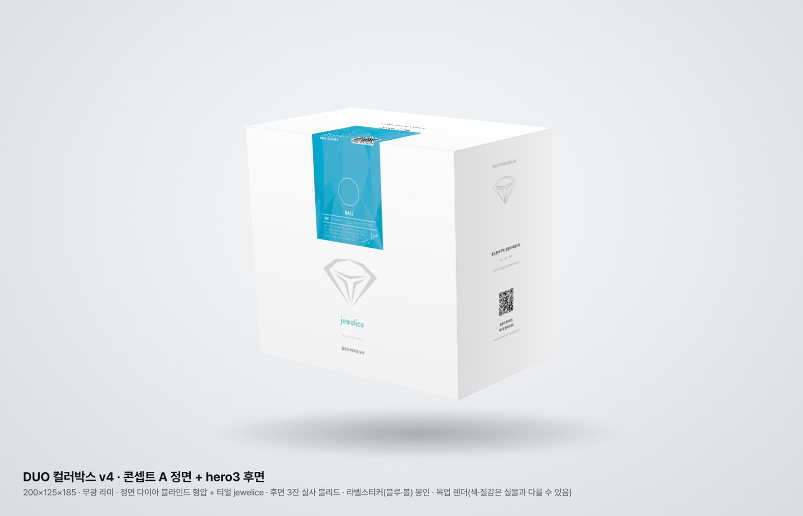
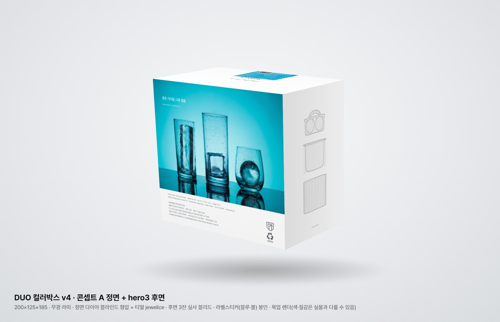
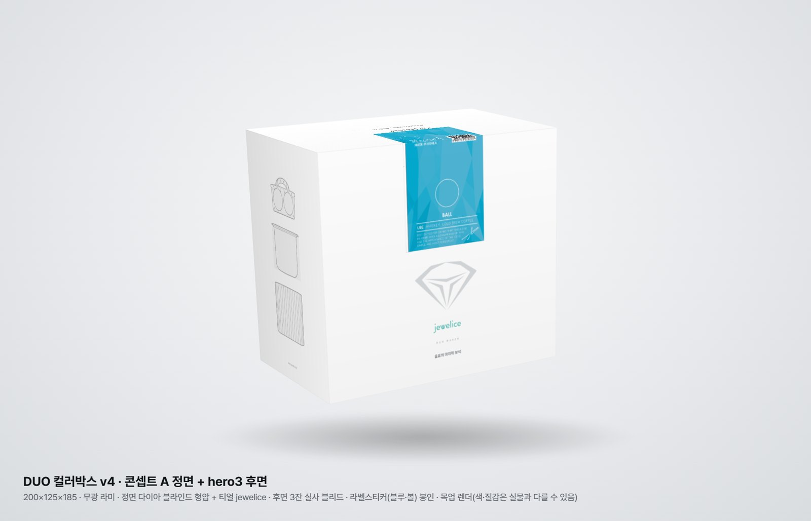
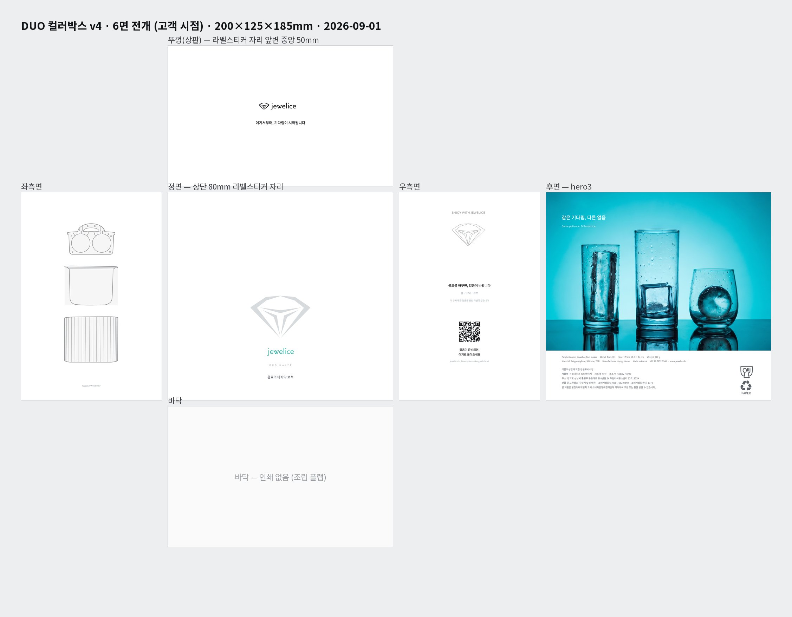
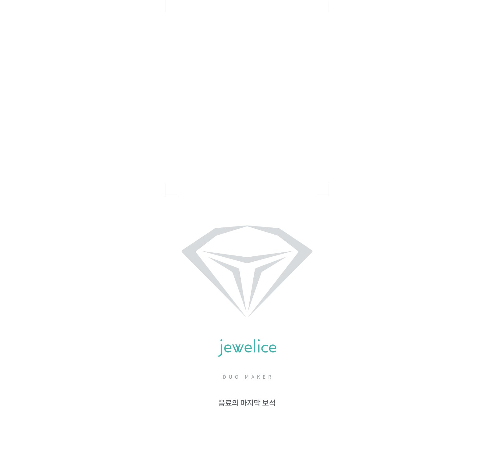
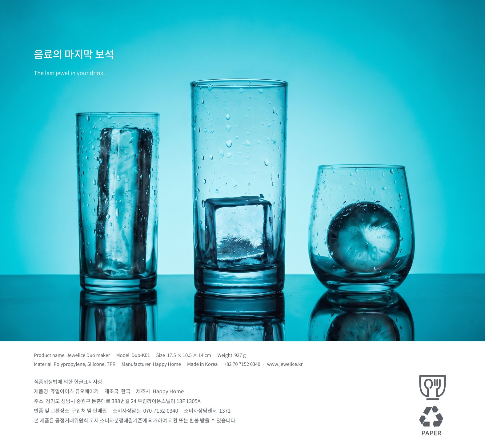
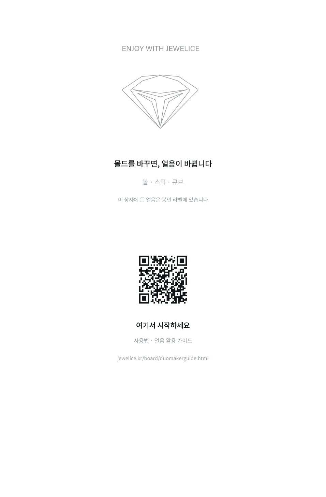
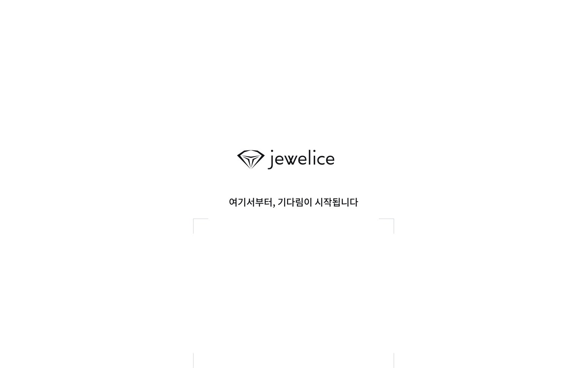

JEWELICE · DUO MAKERv4 최종안 · 2026-09-01
듀오메이커 컬러박스 리디자인 — v4 최종안
보는 시간 3분 · 200×125×185mm(기존 구조·칼선 그대로) · 컬러·얼음 모양은 지금처럼 라벨스티커로 봉인 · 박스 겉에 사용법·시간 숫자 없음(QR → 가이드 페이지)
1 · 완성 모습

정면 — 무광 백색 · 다이아 블라인드 형압(만져야 보이는 로고) · 티얼 jewelice · 라벨스티커 봉인

후면 — 히어로샷(스틱·큐브·볼 3잔) 전면 · 아래 흰 띠에 표시사항

좌측면 — 기존 몰드·물통·케이스 라인드로잉 유지
2 · 6면 전개 (고객이 보는 방향)

뚜껑 / 좌측면 · 정면 · 우측면 · 후면 / 바닥(인쇄 없음). 정면 상단 80mm + 뚜껑 앞변 50mm는 라벨스티커 자리라 비워둠.
3 · 면별 크게 보기

정면 — 다이아 54mm 블라인드 형압(무잉크, 목업은 연회색으로 표현) · jewelice 24mm 티얼 · DUO MAKER

후면 — "같은 기다림, 다른 얼음" · 영문 스펙 · 한글 표시사항(1372 포함) · 식품용·분리배출 마크

우측면 — "몰드를 바꾸면, 얼음이 바뀝니다" · QR(얼음 준비 가이드)

뚜껑 — 로고 · "여기서부터, 기다림이 시작됩니다"
4 · 인쇄 사양 요약
| 구조 | 기존 박스·칼선(보명-38) 그대로 · 수량 10,000개 |
|---|
| 인쇄 | 4도(후면 사진 · 티얼 로고) + 형압 1판(정면 다이아) · 무광 라미네이팅 · 내면 인쇄 없음 · 박 없음 |
|---|
| 라벨 | 기존 라벨스티커 9색 시스템 그대로(컬러·얼음 모양 표시) — 정면 상단·뚜껑 앞변 자리 비워둠 |
|---|
| QR | jewelice.kr/first-ice.html (첫 얼음 준비 가이드 · 사용법·시간은 여기서만) |
|---|
5 · 의견 받을 지점 (회신: 잔디 또는 카톡 · 9/2 수요일 오후까지)
- 정면 — 로고만 있는 "조용한 정면"이 우리 고객에게 맞는가? (기존처럼 제품 설명이 있어야 한다고 보면 그 이유)
- 후면 히어로샷 — 청록 3잔 사진이 힘이 있는가? 문장 "같은 기다림, 다른 얼음"은 유지 / 삭제 / 다른 문장?
- 실물에서 걱정되는 점 — 라벨스티커 부착·매장 진열·택배 파손 등 현장에서 보이는 문제 1가지씩